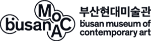
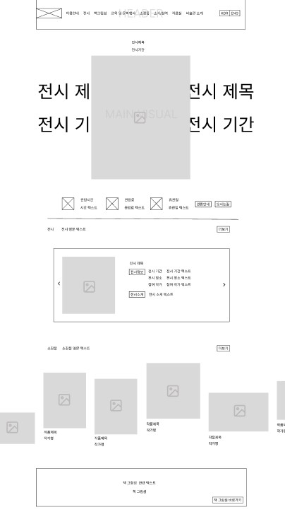
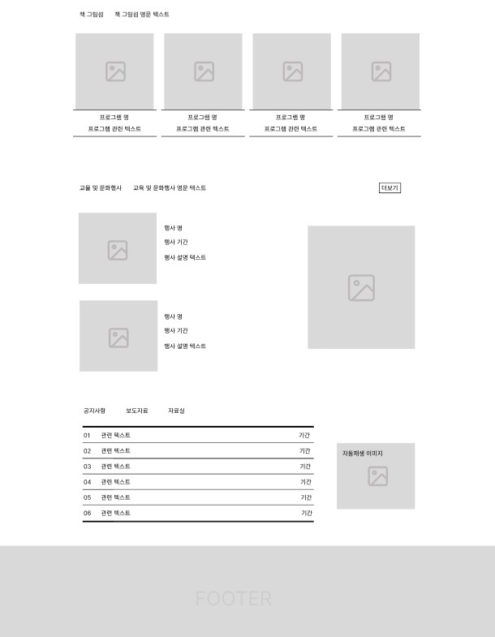
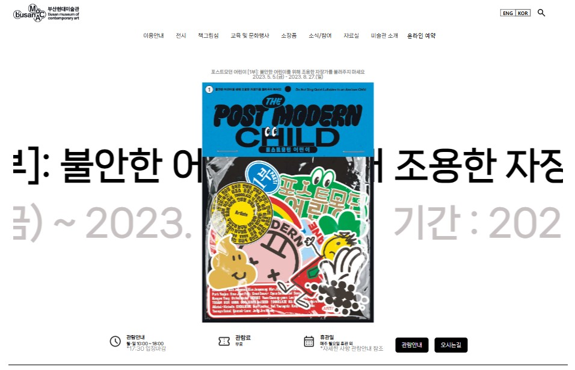
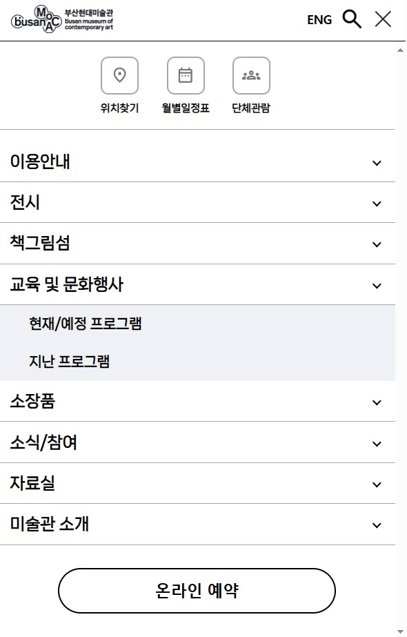

03

PROJECT GOAL
처음 부산 현대미술관 홈페이지를 방문했을 때, 메인 배너 한 섹션만으로 구성되어 있어 다소 불친절하다고 느꼈습니다. 리뉴얼 한 홈페이지는 기존의 단일 배너 방식 대신, 현재 진행하고 있는 전시, 소장품, 여러 프로그램과 문화행사 등 미술관의 다양한 콘텐츠를 한눈에 볼 수 있도록 여러 섹션을 추가하는 것을 홈페이지 리뉴얼 목표로 세웠습니다. 또한, 현대미술관의 아이덴티티를 반영하여, 시각적으로 미적이고 현대적인 디자인 구현을 하기 위한 방법을 연구하였습니다.

UI DESIGN PRINCIPLE
:STYLE GUIDE
FONT
NanumSquareNeo폰트는 한국어 텍스트에 최적화되어 있어, 한글 제목과 본문을 시각적으로 균형있게 표현합니다. 전시의 제목과 전시 설명 등 많은 정보를 제공하는 홈페이지 특성상 깔끔하고 정돈된 느낌의 폰트를 사용해야 했습니다. NanumSquareNeo폰트는 현대적이면서도 부드러운 인상을 주는 폰트로, 전문적인 느낌을 주는 동시에 미술관의 메시지를 명확하게 전달합니다.
COLOR
미술관 홈페이지는 다양한 색상의 전시 포스터와 작품 이미지가 자주 업데이트되기 때문에, 무채색 계열을 사용하여 배경을 깔끔하게 유지하면서 포스터와 콘텐츠가 돋보여 지도록 하였습니다. 또한, 무채색을 사용하면 타이포그래피의 명료성이 극대화 되는데 검은색 텍스트는 흰색 배경에서 가장 높은 대비를 제공하므로, 정보를 명확하게 전달하고 관람객의 가독성을 높이는데 효과적이라고 생각하였습니다.
SUB
NanumSquareNeoHeavy NanumSquareNeoBold NanumSquareNeoLightCOLOR
#ffffff
#b3b3b3
#000000
OVERVIEW
부산광역시가 운영하는 이 미술관은 현대미술의 다양한 흐름을 포괄하고, 국내외 현대미술 작가들의 작품을 소개하며, 미술과 기술, 자연과 인간의 관계 등 다양한 주제를 다룹니다. 을숙도라는 생태적으로 중요한 공간에 위치한 만큼, 부산현대미술관은 환경 문제와 지속 가능성을 주제로 한 전시와 프로젝트에도 큰 비중을 두고 있습니다. 자연 환경과 인간, 예술의 관계를 탐구하는 전시를 통해 환경에 대한 사회적 인식을 높이는 데 기여하고 있습니다.
'어떻게 하면 관람객들이 미술관 방문 전에 필요한 정보를 쉽게 얻을 수 있을까?'
메인 페이지에 “오늘의 전시”, “관람 안내”, “관람료”, "오시는길" 섹션을 상단에 배치하고, 간결한 아이콘과 텍스트를 사용해 쉽게 인식 가능하도록 제작하였습니다. 또한 현재 진행중인 프로그램을 포스터와 함께 보여주어 시각적으로 명확한 정보 제공을 함과 동시에 동적으로 흐르는 텍스트를 사용해 사용자들의 시선이 더 오래 머무르도록 유도하였습니다
AS-IS
정보 제공이 부족한 홈페이지 구성
시선을 끌지 못하는 첫 화면 디자인
미술관의 주요 작품에 대한 디지털 관람 기능 부족
TO-BE
리뉴얼된 홈페이지는 현재 전시, 프로그램, 미술관을 대표하는 시설 등의 섹션으로 나뉘어 구성되어 있어, 정보가 명확하게 분류되고, 사용자들이 원하는 정보를 쉽게 찾을 수 있습니다.
동적으로 흐르는 텍스트를 사용하여 사용자의 흥미를 유발하였고, 정보가 쉽게 이해되지 않을 수 있는 점을 고려하여, 추가적인 설명을 명확하게 제공해 방문객이 필요한 정보를 쉽게 얻을 수 있도록 했습니다.
현대미술관을 대표하는 소장품을 메인페이지에서 디지털로 구경할 수 있는 기능을 추가하였습니다.
WIREFRAME
1920px 기준으로 하여 헤더 / 메인 / 컨텐츠 / 푸터 페이지를 구성 후,
UI Wireframe을 제작하였습니다.


각 카테고리 별
얻을 수 있는
상세한 정보

흥미를 유발하는 동적 애니메이션과
다양한 화면 크기에서도
자연스럽게 정보를 제공

모바일에서도 최적화된
정보탐색 기능